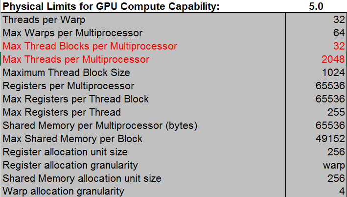
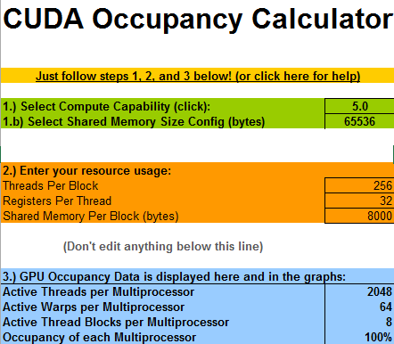
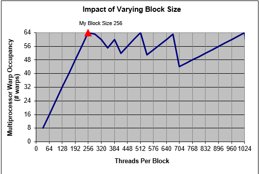
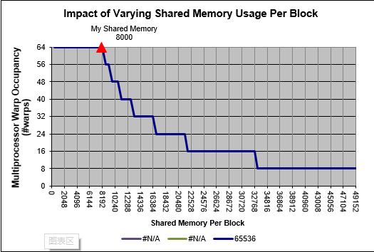
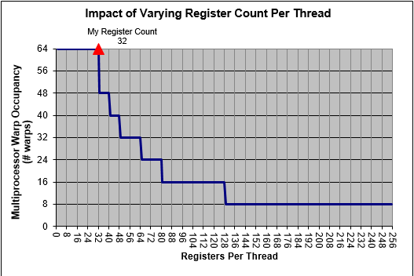

Streaming MultiProcessor、Register、Shared-Memory对线程块尺寸的影响
简介
线程块中线程总数的大小除了受到硬件中Max Threads Per block的限制，同时还要受到Streaming Multiprocessor、Register和Shared Memory的影响。这些条件的共同作用下可以获得一个相对更合适的block尺寸。当block尺寸太小时，将无法充分利用所有线程；当block尺寸太大时，如果线程需要的资源总和过多，CUDA将通过强制减少block数量来保证资源供应，同样无法利用所有线程。而grid的尺寸通常越大越好，当然够用就可以了，以免浪费资源。
本文需要通过NVIDIA官方提供的一个非常有用的工具C:\Program Files\NVIDIA GPU Computing Toolkit\CUDA\v7.0\tools\CUDA_Occupancy_Calculator.xls进行辅助计算来获得合适的block大小。这个excle表中的Help表单有详细的使用说明，以下分析将基于这个工具。
可以通过在编译时添加--ptxas-options=-v参数在编译时输出当前程序中所使用的Register和Shared Memory大小。
SM的限制对block尺寸的影响
Multiprocessor(以下所有的Multiprocessor都是指Streaming Multiprocessor，即SM,具体SM在GPU中的结构组织参见http://notes.maxwi.com/2015/06/11/CUDA-study-notes/基本概念中的图示)中thread数量的限制主要影响工作状态的线程是否能够占满当前的整个Multiprocessor。为了使工作状态的线程能够占满整个Multiprocessor，block中的thread的总数应当不小于Max Threads Per Multiprocessor / Max Thread Blocks Per Multiprocessor。
下图所示为CUDA_Occupancy_Calculator给出的计算能力为5.0的GPU的参数。

此时线程块的中线程数量应当不小于2048/32 = 64。当线程块的数量小于64时，由于每个Multiprocessor中可以含有的最大线程块只有32个，所以此时32个线程块乘以这个小于64的数字必然要小于2048，也就是无论怎样都无法使线程填满整个Multiprocessor，导致SM中会有空闲的Streaming Processor。所以根据要填满SM，则要求每个线程块中至少需要有64个线程。如果将线程块尺寸设置为1024，则此时根据SM总线程的限制2048，每个SM可以启动2个线程块。
注意：1). 当前计算能力5.0的设备每个线程块中线程数量上限Maximum Thread Block Size=1024、2). CUDA中线程组织单位为Wrap，此处Threads per Warp=32，所以线程块中的线程数量应为32的倍数。3). 各维都有大小限制，计算能力5.0的三维分别为1024,1024,64
CUDA_Occupancy_Calculator的使用
下图为CUDA_Occupancy_Calculator计算结果，由于此处只讨论了SM中线程及线程块的限制对block尺寸的影响，所以这里只需要使曲线的红三角在波峰即可。注意第一张图中的1.)、1.b)需要根据自己的硬件情况进行选择；2).需要自己填入的程序参数(可以通过2.2的方法获得)，3).工具计算出的GPU使用率，显示此时占用为100%，也就是SM中的活动线程束为64个，即64*32。其他各图是其对应的曲线，由第二幅图可以看出在register和shared memory固定的情况下，block尺寸设置为256, 512, 1024时都可以占满SM，因为它们都有以下特点：1). 大于64，满足不小于Max Threads Per Multiprocessor / Max Thread Blocks Per Multiprocessor; 2). 32的整数倍，满足线程束的最小单位Wrap; 3). 可以被2048整除，因为Max Threads Per Multiprocessor=2048。




Register对block尺寸的影响
计算能力为5.0的设备Registers per Multiprocessor=65536，Max Registers per Thread=256。也就是说一个SM总共也就只有65536个register，一个thread最多能定义256大小的register，根据上图可以看出，显然当Register Per Thread大于32时性能就要开始降低了。因为当前情况下SM中的所有线程都被占满了(此处占满意思是所有线程都为活动线程)，也就是说在这种block参数配置下，一个SM最多可以启动2048个线程(注意是最多可以，并不是说一定要，比如我一共就1000个数据，当然就启动1000个线程就可以了)，由于SM中能使用的register最多只有65536，当SM中的资源不够用时，SM就会强制减少block，所以Register Per Thread应该不大于Registers per Multiprocessor / Max Threads per Multiprocessor，也就是65536 / 2048 = 32
Shared Memory对block尺寸的影响
计算能力为5.0的设备Shared Memory per Multiprocessor (bytes)=65536，Max Shared Memory per Block=49152。也就是说block中的smem(Shared Memory)必须要小于49152，要想使得SM中的线程全部占满，那么整个SM中占用的smem必须小于65536。由于smem是以block为单位进行分配，所以当smem不够用时也就会以block为单位进行减少线程。所以Shared Memory Per Block (bytes)应该不大于Shared Memory per Multiprocessor / Active Thread Blocks per Multiprocessor = Shared Memory per Multiprocessor / (Max Threads per Multiprocessor / Threads Per Block)，当block尺寸设置为256时，Shared Memory Per Block (bytes)最大值为65536 / (2048/256) = 8192。
总结
block最佳尺寸应该满足：
1). 不小于Max Threads Per Multiprocessor / Max Thread Blocks Per Multiprocessor；
2). 32的整数倍；
3). 可以被Max Threads Per Multiprocessor整除。
4). Register Per Thread应该不大于Registers per Multiprocessor / Max Threads per Multiprocessor，否则根据CUDA_Occupancy_Calculator.xls参考调节block尺寸以获得最佳性能。
5). Shared Memory Per Block (bytes)最大值应该不大于Shared Memory per Multiprocessor / (Max Threads per Multiprocessor / Threads Per Block)，否则根据CUDA_Occupancy_Calculator.xls参考调节block尺寸以获得最佳性能。
注意：
- 没有标明单位的量其单位都为个。
CUDA_Occupancy_Calculator给出了register和shared memory的分配单位，精确优化时应该非常有用。
Register allocation unit size 256
Register allocation granularity warp
Shared Memory allocation unit size 256
Warp allocation granularity 4